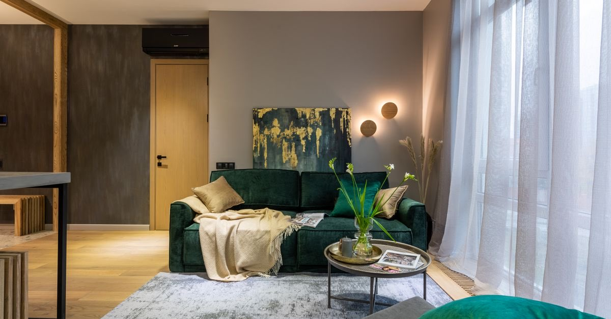

DASK ve sigorta
DASK neleri karşılamaz? Eşya, enkaz, kira ve can kaybı teminat dışıdır
DASK binanızı sigortalar, hayatınızı değil. Ev eşyası, enkaz kaldırma, alternatif konaklama, kira kaybı ve ölüm dâhil bedeni zararlar kapsam dışıdır.
· ~4 dakika okuma · T8 Hasar Tespiti · Claude Impact Lab

Türkiye'de en yaygın sigorta yanılgısı tek cümleyle özetlenebilir: "DASK'ım var, ben güvendeyim." Zorunlu deprem sigortası önemli bir korumadır ama kapsamı, çoğu kişinin sandığından çok daha dardır.
DASK binanızı sigortalar, hayatınızı değil. Eşyanız, canınız, kiranız ve enkaz masrafınız DASK kapsamında değildir.
DASK neyi karşılar?
Sigorta, depremin doğrudan neden olduğu maddi zararlar ile deprem nedeniyle ortaya çıkan yangın, infilak, dev dalga (tsunami) ve yer kayması sonucu binada meydana gelen maddi zararları teminat altına alır.
Teminat kapsamındaki bina unsurları: temeller, ana duvarlar, bağımsız bölümleri ayıran ortak duvarlar, tavan ve tabanlar, merdivenler, asansörler, sahanlıklar, koridorlar, çatılar, bacalar ve yapının benzer nitelikteki tamamlayıcı kısımları.
DASK neleri karşılamaz? Tam liste
- Enkaz kaldırma masrafları
- Kâr kaybı, iş durması, kira mahrumiyeti
- Alternatif ikametgâh ve iş yeri masrafları
- Mali sorumluluklar ve benzeri dolaylı zararlar
- Her türlü taşınır mal, eşya ve benzerleri — mobilya, beyaz eşya, elektronik: hiçbiri kapsamda değildir
- Ölüm dâhil olmak üzere tüm bedeni zararlar
- Manevi tazminat talepleri
- Deprem ve deprem sonucu oluşan yangın, infilak, tsunami veya yer kaymasının dışında kalan hasarlar
- Belirli bir deprem hadisesine bağlı olmaksızın, binanın kendi kusur ve özellikleri nedeniyle zamanla oluşan zararlar
Hangi binalar hiç sigortalanamaz?
Bazı binalar için poliçe yapılsa dahi genel şartlar gereği kapsam dışı sayılabilir:
- Kamu hizmet binası olarak kullanılan binalar
- Köy yerleşik alanlarındaki binalar
- Tamamı ticari veya sınai amaçla kullanılan binalar
- Projesi bulunmayan ve mühendislik hizmeti görmemiş binalar
- Taşıyıcı sistemi olumsuz yönde etkileyecek şekilde tadil edilmiş binalar
- Yetkili kamu kurumlarınca yıkılmasına karar verilen binalar ile metruk, bakımsız veya harap binalar
"Salonu büyütmek için kolon kestirdim", "taşıyıcı duvarı kaldırdık" diyen bir malikin poliçesi, hasar anında tartışma konusu olabilir. Taşıyıcı sisteme dokunan her tadilat, hem bina güvenliği hem sigorta bakımından risk üretir.
Açıkta kalan zararı ne kapatır?
| Konu | DASK | Konut sigortası (deprem ek teminatlı) |
|---|---|---|
| Zorunluluk | Zorunlu | İsteğe bağlı |
| Bina hasarı | Azami teminata kadar | DASK limitinin üstü |
| Eşya / taşınır mal | Yok | Poliçeye göre var |
| Enkaz kaldırma | Yok | Ek teminat olarak seçilebilir |
| Kira mahrumiyeti / alternatif konut | Yok | Poliçeye göre var |
| Bedeni zararlar, ölüm | Yok | Ferdi kaza teminatıyla kısmen |
İşleyiş sırası: önce DASK devreye girer ve limitine kadar öder; DASK limitini aşan kısım, varsa konut paket poliçesinin deprem teminatından karşılanır. İkisi birbirinin alternatifi değil, tamamlayıcısıdır.
Kiracıysanız durum daha da nettir
DASK poliçesi binaya ve malike bağlıdır; tazminat malike ödenir. Kiracı DASK yaptıramaz. Buna karşılık kiracı, kendi eşyası için konut/eşya sigortası yaptırabilir. Bina malikin, eşya sizin — sigortası da ayrıdır.
Türkiye'de kiracılar arasında eşya sigortasının yaygınlığı çok düşüktür; oysa aylık maliyeti düşük, karşılığı yüksek bir üründür. Kiracının deprem hakları yazısında ayrıntılı anlatılıyor.
Can kaybı: en büyük boşluk
Deprem sonrasında ailelerin karşılaştığı en acı sürprizlerden biri budur: DASK ölümü karşılamaz. Bedeni zararların karşılığı hayat sigortası ve deprem teminatı seçilmiş ferdi kaza poliçeleridir. Standart ferdi kaza poliçelerinde deprem, aksi kararlaştırılmadıkça teminat dışıdır.
Yakınını kaybedenler için başvuru sırası: ölüm karinesi, sigorta, SGK ve BES.
Bugün yapılabilecek üç şey
- Poliçenizi okuyun. Bina metrekaresi doğru mu, yapı tarzı doğru mu? Yanlış metrekare, eksik sigorta bedeli demektir.
- Açığınızı hesaplayın. Sigorta açığı aracı binanızın sigorta bedelini, muafiyeti ve açıkta kalan tutarı gösterir.
- Eksik teminatları tamamlayın. Eşya, enkaz kaldırma, alternatif konaklama ve ferdi kaza teminatlarını ihtiyari poliçelerle değerlendirin. DASK yeterli mi?
İş yeriniz varsa durum farklı
Zorunlu deprem sigortası, mesken olarak inşa edilmiş binalar ile bu binalar içindeki ticarethane, büro ve benzeri amaçlarla kullanılan bağımsız bölümleri kapsar. Buna karşılık tamamı ticari veya sınai amaçla kullanılan binalar genel şartlar gereği kapsam dışındadır.
Pratik sonuç şudur: apartmanın zemin katındaki dükkân kapsamda olabilirken, müstakil bir fabrika veya iş hanı DASK ile korunmaz. Bu yapılar için ticari deprem sigortası gerekir. Ayrıca DASK, iş yeri sahibinin asıl kaybını — iş durması ve kâr kaybını — hiçbir hâlde karşılamaz; bu, ayrı bir teminat konusudur.
Ortak alan hasarları ne oluyor?
Teminat kapsamındaki bina unsurları arasında ortak duvarlar, merdivenler, asansörler, sahanlıklar, koridorlar, çatılar ve bacalar da sayılmıştır. Yani ortak alan hasarları kural olarak teminat kapsamındadır; ancak ödeme her bağımsız bölümün poliçesi ve sigorta bedeli üzerinden yürür.
Bu yüzden apartmanda bazı dairelerin poliçesiz olması, ortak alan onarımında maliyet paylaşımı sorunu yaratır. Yönetim planı ve kat malikleri kurulu kararları burada belirleyici olur.
Sık sorulan sorular
DASK ev eşyasını karşılar mı?
Hayır. Genel şartlar her türlü taşınır malı, eşyayı ve benzerlerini açıkça teminat dışında bırakır. Mobilya, beyaz eşya ve elektronik cihazlar için ihtiyari konut/eşya sigortası gerekir.
Enkaz kaldırma masrafını DASK öder mi?
Hayır. Enkaz kaldırma masrafları genel şartlarda sayılan teminat dışı kalemler arasındadır. Bazı konut paket poliçelerinde ek teminat olarak seçilebilir.
Depremde evim oturulamaz hâle geldi, DASK kira öder mi?
Hayır. Kâr kaybı, iş durması, kira mahrumiyeti ve alternatif ikametgâh masrafları teminat dışıdır. Bu ihtiyaç ancak ihtiyari konut sigortasının ilgili teminatlarıyla karşılanabilir.
Depremde ölüm veya yaralanma DASK kapsamında mı?
Hayır. Ölüm dâhil olmak üzere tüm bedeni zararlar ve manevi tazminat talepleri teminat dışıdır. Bedeni zararların karşılığı hayat sigortası ve deprem teminatı seçilmiş ferdi kaza poliçeleridir.
Hangi binalar DASK kapsamı dışındadır?
Kamu hizmet binaları, köy yerleşik alanlarındaki binalar, tamamı ticari veya sınai amaçla kullanılan binalar, projesi bulunmayan ve mühendislik hizmeti görmemiş yapılar, taşıyıcı sistemi olumsuz etkilenecek şekilde tadil edilmiş binalar ile yıkılmasına karar verilen, metruk veya harap binalar.
Hangi kanuna dayanıyor?
Bu yazıdaki bilgilerin dayandığı düzenlemeler:
- Zorunlu Deprem Sigortası Genel Şartları A.1 — teminat kapsamı
- Zorunlu Deprem Sigortası Genel Şartları A.3 — teminat dışında kalan hâller
- Zorunlu Deprem Sigortası Genel Şartları A.2 — kapsam dışı binalar
- 6305 sayılı Afet Sigortaları Kanunu
- Sigorta açığı hesabı — DASK'ın kapsadığı ve açıkta kalan tutarı hesaplayın
- Haklarım — malik veya kiracı olarak hangi haklara sahipsiniz?